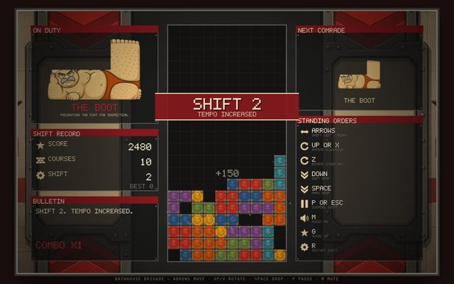

Bathhouse Brigade
Desktop · keyboardfalling-block puzzle
A retro Soviet-constructivist falling-block comedy: each of the seven pieces is an enormous grumpy old man in a Speedo posed as the block silhouette. Clear four courses at once for a FULL BRIGADE bonus.